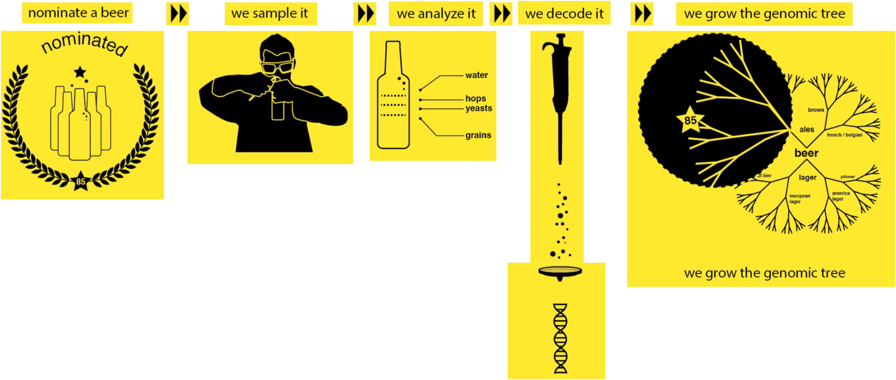

Decode your beer here and find which organisms are hidding there!
 Learn how to decode your beer with our interactive tours
Learn how to decode your beer with our interactive tours
 Run one of our workflow to decode your beer
Run one of our workflow to decode your beer
 Follow one of our tutorial to go deeper into metagenomics analyses
Follow one of our tutorial to go deeper into metagenomics analyses
BeerDeCoded is a participatory project investigate the microbial composition of a collection of commercial beers. The goal of the BeerDeCoded project is not only to extend the scientific knowledge about beer, but also to improve the public understanding of issues related to personal genomics, food technology, and their role in society.
For the data analysis, the BeerDeCoded project is using Galaxy, inside a Galaxy Docker flavor based on ASaiM.